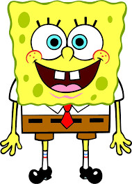

Character Biography

Spongebob Squarepants
- This is Spongebob Squarepants.
- He was born in Bikini Bottom, on July 14, 1986.
- He is the first and only child.
- His parents are Harold Squarepants and Margaret Squarepants.
- He works as a Krusty Krab cashier, janitor, manager and waiter.
- He has a good friend Patrick and goes to Mrs. Puff's Boating School.
- He is good friends with Patrick Star and works for Mr. Krabs.